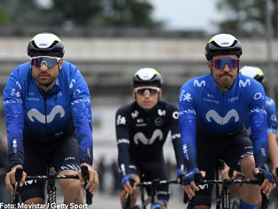
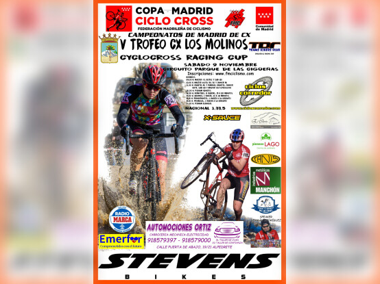
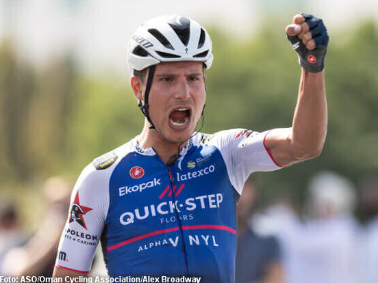

Vuelta a Andalucía-Ruta del Sol centenaria en 2025

La 71ª edición de la Vuelta Ciclista a Andalucía-Ruta del Sol 2025,
que coincidirá con el centenario de la primera vez
que se disputó en 1925.
En un comunicado, los promotores de la prueba destacan
que es una "edición que se afronta con la máxima ilusión ante la conmemoración del
centenario de la prueba".
Albert Torres y Davide Cimolai renuevan con Movistar Team
El equipo Movistar ha anunciado la renovación por una temporada más del menorquín Albert Torres
y del italiano Davide Cimolai.
Ambos ciclistas continuarán hasta 2025 en las filas de la
escuadra dirigida por Eusebio Unzué, aportando experiencia y solidez al conjunto navarro.
Los Molinos recibirá el Campeonato de Ciclocross
El sábado 9 de noviembre Los Molinos volverá a ser el centro del ciclocross
madrileño con la celebración del V Trofeo Ciclocross Los Molinos, organizado por
el Teams Bikers Club en colaboración con el Ayuntamiento.
Tras seis años de
ausencia, la prueba regresa con fuerza al ser sede del Campeonato de Madrid de
ciclocross.
El italiano Fausto Masnada se une al Astana-Qazaqstan
El ciclista italiano Fausto Masnada, de 30 años, ha sido confirmado
como nuevo fichaje del equipo Astana-Qazaqstan para la temporada 2025.
El acuerdo entre el corredor y el equipo kazajo se ha sellado con un contrato
de un año. Supone un nuevo capítulo en la carrera de Masnada, quien cuenta con
un destacado palmarés en el ciclismo de ruta.